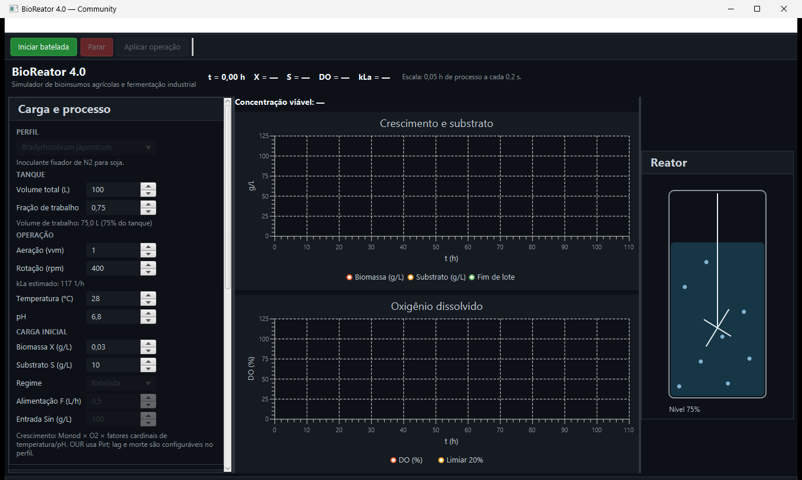
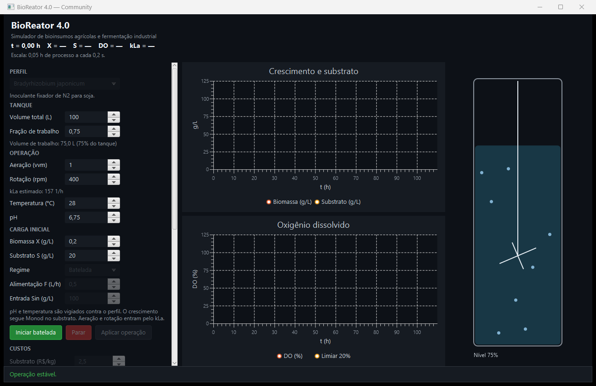
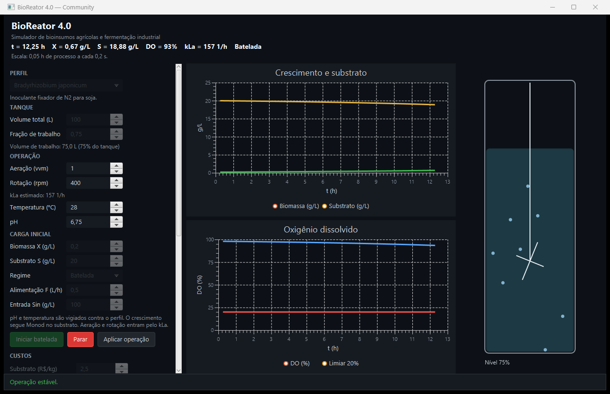

Acompanhe uma fermentação inteira no seu computador.
Você conduz a batelada e vê biomassa, substrato e oxigênio mudarem ao longo das horas.
A loja está alinhada à Community 1.1.0. Os links de arquivo ficam ativos após a publicação da release bioreator-1.1.0 no GitHub.
O que você encontra
A 1.1.0 adiciona limitação por oxigênio, fatores cardinais de temperatura e pH, fase lag, decaimento celular, conversão configurada para UFC/mL e encerramento automático quando o substrato se esgota. Também atualiza a geometria de kLa e a migração do histórico SQLite.
Os links de MSI e ZIP apontam para a release prevista no GitHub e passam a funcionar quando ela for publicada.
Parâmetros e equações · Curva e CSV didáticos

As capturas abaixo mostram os gráficos da versão 1.0.0 e são identificadas como referência histórica; o painel acima é da 1.1.0.


O histórico é salvo localmente em SQLite. Consulte a localização dos dados e os arquivos CSV da versão atual em Download.
A Community 1.1.0 simula um organismo em batelada, com histórico local e CSV. Uma versão paga está prevista para 2027; seu escopo e condições comerciais ainda não estão definidos. Os números da tela vêm do simulador.
Community 1.1.0 para Windows x64: release bioreator-1.1.0 (a publicar).
Versão paga: prevista para 2027. O escopo e as condições comerciais ainda podem mudar.